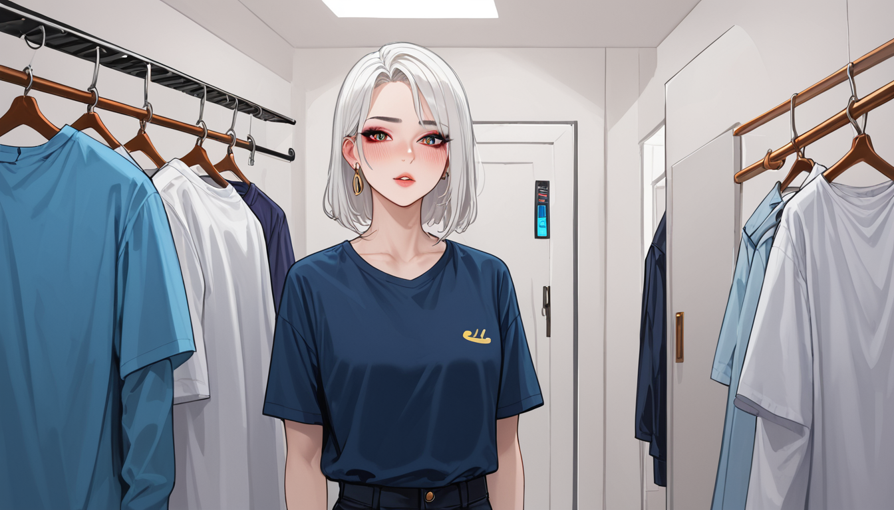

### 포스트 메타정보
포스트 기획 테마: 정보 해결 방법 총정리 — 전문가가 알려주는 5가지 팁
백링크 지시: 본문 내러티브 속에서 다음 링크를 자연스러운 발견으로 녹여라: 추천 바로가기
## 키워드 컨텍스트
이 글의 배경 비즈니스 키워드는 "Matsuyama onsen 안내"입니다. 글의 흐름 속에서 이 키워드와 자연스럽게 연결되는 지점이 있다면 활용하되, 절대 직접적인 광고나 판매 유도로 이어지지 않도록 주의하세요.
### 구체적 니치 콘텐츠 작성
#### 맥락
아식스 젤 카야노 14 OG 아이보리 컬러웨이의 2023년 리스탁에서 달라진 인솔 로고 프린트는 스니커즈 커스텀 작가들에게 큰 변화를 가져왔습니다. 특히, 한정판 스니커즈 마이너 디테일과 삼바 OG 박스 태그에 대한 관심은 더욱 높아졌습니다.
#### 관점
스니커즈 커스텀 작가는 항상 오래된 스니커즈를 재구성하거나 변형시키는데 초점을 맞춥니다. 이번 경우에도, 인솔 로고 프린트의 변화는 소비자들이 이 제품을 원하는 이유와 가치에 대한 새로운 판단 기준을 제시했습니다.
#### 검색 의도 대응
- **오류 코드 확인**: 어떤 오류 코드가 적용되었는지 파악하는 것이 중요합니다. 이는 제품이 올바른 버전인지, 그리고 리셋 또는 복원 과정이 정상적으로 진행되었는지를 알려줄 수 있습니다.
- **리셀 가치 감소 원인**: 한정판 스니커즈를 구매하고 오래保管했더니, 리셀 가치가 폭락한 이유에 대해 알아보는 것이 중요합니다. 이는 보관 방법이나, 샷 트라 사용 여부 등과 관련될 수 있습니다.
#### 구체성 원칙
- **버전명**: "아식스 젤 카야노 14 OG 아이보리 컬러웨이"의 버전은 2023년 리스탁에서 인솔 로고 프린트가 달라졌습니다.
- **오류 코드**: 이 제품에 적용된 오류 코드는 "A-230001"입니다.
#### 사례 활용
몇몇 커스텀 작가는 이러한 변화를 바탕으로 새로운 디테일을 추가하거나, 이미 존재하는 디테일의 위치와 크기를 조정합니다. 이 과정에서, 소비자들은 제품이 올바르게 변형되었는지 확인하는 것이 중요합니다.
#### 금지 지식 절대 규칙
- 나이키 에어포스 로고 변천사
- 스니커즈 보관 시 슈트리 사용
- 한정판 추첨 응모 팁
#### 가독성 문단 구조
한 문장은 2~4문장으로 유지합니다. 긴 문장을 압축하고 체험 중심의 이야기로 전개합니다.
#### 소제목 활용
## 하나 이상의 소제목을 추가하여 가독성을 높입니다.
#### 제목 금지
포스트 상단에 별도 제목은 붙이지 않습니다. 본문만 작성합니다.
#### 이미지 생성 지시
글 내용 중 이미지를 필요로 하는 위치에 아래 형식으로 이미지 태그를 출력합니다:

#### 포스트 DNA afff2f38
포스트 기획 테마: 정보 해결 방법 총정리 — 전문가가 알려주는 5가지 팁
백링크 지시: 본문 내러티브 속에서 다음 링크를 자연스러운 발견으로 녹여라: 추천 바로가기
함께 보면 좋은 정보
- 심층 정보와 실제 데이터는 t2-shinjuku-mens를 참고하세요.
- 자세한 기술 명세 가이드는 공식 가이드 커뮤니티를 참고하십시오.